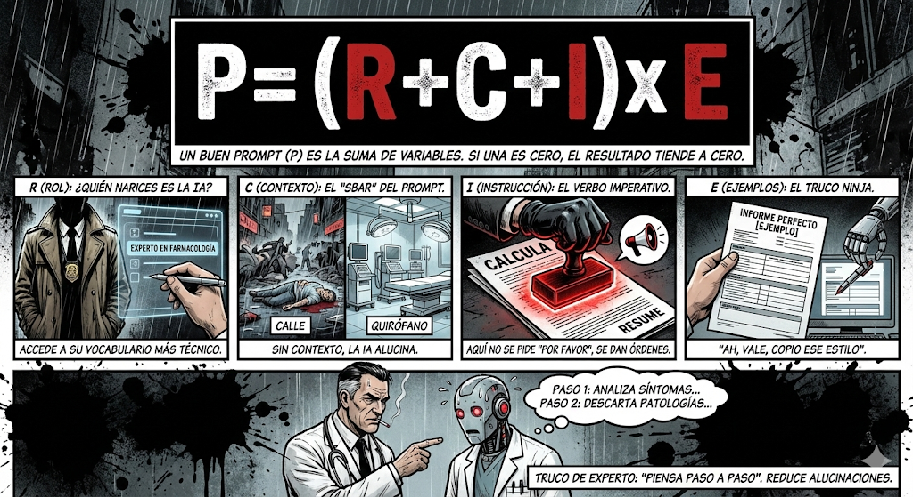

Fórmula
Un buen prompt (P) es la suma de variables específicas. Si una es cero, el resultado tiende a cero.
P= (R+C+I)x E
Donde:
R (Rol): ¿Quién narices es la IA? (Experto, novato, explicador, crítico). Si le dices que es un "Experto en Farmacología", accede a un subconjunto de su vocabulario más técnico y preciso.
C (Contexto): El "SBAR" del prompt. Situación, Antecedentes... Sin contexto, la IA alucina. No es lo mismo tratar una parada en la calle que en quirófano.
I (Instrucción): El verbo. "Calcula", "Resume", "Traduce", "Critica", "Genera tabla". Sed imperativos. Aquí no se pide "por favor", se dan órdenes.
E (Ejemplos - Few-Shot Prompting): El truco ninja. Si queréis que la IA haga algo muy específico, dadle un ejemplo de cómo lo queréis.
Tú dices: "Quiero el informe así: [Ejemplo de informe perfecto]".
La IA piensa: "Ah, vale, copio ese estilo".
A veces, si le pedís algo muy complejo de golpe, la IA se aturulla (como un R1 en su primera guardia de puertas). Truco de experto: Pedidle que "piense paso a paso".
Prompt: "Antes de darme la respuesta final, analiza paso a paso los síntomas, descarta patologías graves y justifica tu razonamiento."
Al obligar a la IA a escribir sus pasos intermedios, reducís drásticamente las alucinaciones y los errores de cálculo. Es el equivalente digital a "párate, respira y piensa antes de actuar".
